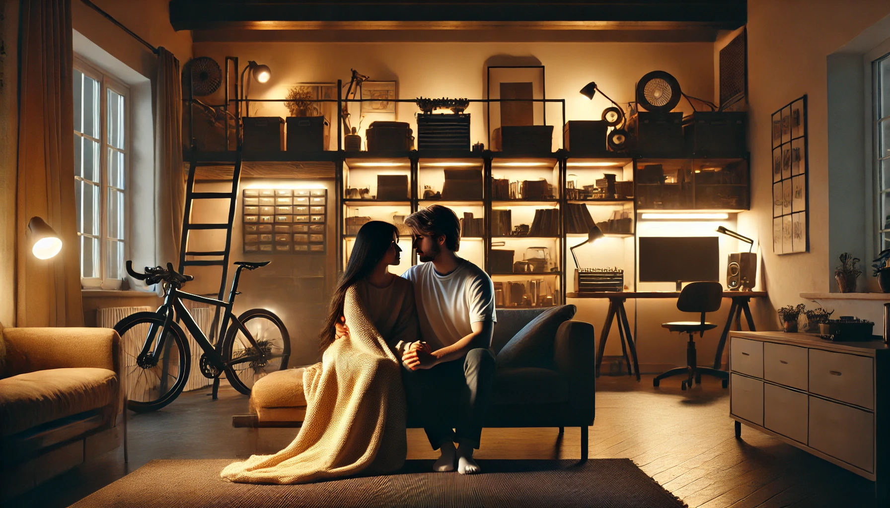

Уют
Ты знаешь, я всё чаще думаю о том, какой будет наша жизнь вместе. Эти мысли окутывают меня теплом, как мягкий плед в прохладный вечер. Они наполнены простыми, но такими важными моментами, где есть ты, есть мы, и наша любовь, которая пронизывает всё, что мы делаем.
Каждое утро будет начинаться с тепла. Ты просыпаешься чуть раньше, чем я, нежно зовёшь меня или просто тихонько касаешься моей руки. Я открываю глаза и вижу твою улыбку — чуть сонную, но такую добрую, тёплую. Ты всегда выглядишь так, будто рад меня видеть, даже если только что проснулся. Ты приносишь мне кофе, я лениво вытягиваюсь в постели, и всё вокруг становится идеальным, потому что ты рядом. Мы завтракаем вместе, разговариваем или просто молчим, наслаждаясь присутствием друг друга. Даже молчание с тобой — это особое, глубокое чувство, которое не требует слов.
Вечером я представляю, как мы возвращаемся домой. Наш дом — функциональный, минималистичный, но сделанный с душой. Каждая деталь в нём будет отражать нас: большая мастерская, где мы воплощаем свои мечты, кинозона, где мы смотрим фильмы под одним пледом, стеллаж с нашими любимыми книгами, уютная спальня, кабинет и даже спортивный зал. Этот дом будет нашим пространством — местом, где всё, о чём мы мечтали, становится реальностью.
Я вижу нас в каждом уголке этого дома. Например, в спортзале — ты занимаешься, полностью сосредоточенный на упражнениях, и я прохожу мимо, делая вид, что занята своими делами. Но на самом деле я задерживаю взгляд, ловлю каждую мелочь: как двигаются твои плечи, как ты вытираешь лоб, как искренне увлечён тем, что делаешь. Твои сосредоточенные движения, лёгкая испарина, этот уверенный взгляд — всё это заставляет моё сердце биться чуть быстрее. Иногда ты замечаешь меня, улыбаешься своей фирменной тёплой улыбкой и шутишь: «Ну что, опять подглядываешь?» А я смеюсь в ответ, потому что это правда. Я не могу не смотреть на тебя.
Вечера — это отдельная магия. Мы садимся на диван, ты укрываешь нас пледом, берёшь мою руку или обнимаешь за плечи. Мы смотрим фильм, но, как обычно, не можем не обсуждать каждую деталь. Я спрашиваю, а как бы ты поступил на месте главного героя, ты высказываешь свои мысли, и мы увлекаемся так сильно, что иногда фильм становится лишь поводом для разговора. Ты так искренне делишься своими мыслями, что я ловлю себя на том, что больше смотрю на тебя, чем на экран.
А когда наступает ночь, мы ложимся спать. Я поворачиваюсь на правый бок, а ты нежно обнимаешь меня сзади, прижимаясь так, что я чувствую твоё тепло. Твои руки, мягкие и сильные, кажутся идеальным укрытием от всего мира. Иногда ты шепчешь что-то едва слышное, иногда просто молчишь, но каждое прикосновение, каждое движение говорит о том, что я для тебя важна. В эти моменты я чувствую абсолютное спокойствие и счастье.
Мне кажется, что с тобой даже самые обычные дела становятся чем-то большим. Готовка, уборка, прогулки — всё это наполняется смыслом, потому что в каждой мелочи я вижу тебя. Ты учишь меня готовить, терпеливо объясняешь, смеёшься, когда у меня что-то идёт не так, и всё равно поддерживаешь, будто я уже справилась. Ты подбадриваешь меня, когда я сомневаюсь, и вдохновляешь своим примером. Даже твоя улыбка или твой взгляд — это уже столько для меня значит.
Наш дом, наш мир — он будет таким, каким мы захотим. С мастерской, где мы воплощаем идеи, с кинозоной, где обсуждаем фильмы до полуночи, с уютной спальней, где твои объятия становятся самым тёплым местом на земле. И всё это — место, где есть мы. Наши мечты, наши моменты, наша любовь. Я чувствую, что с тобой каждый день будет наполнен этими мелочами, которые превращают обычную жизнь в настоящее счастье. Потому что ты — это моё счастье.
